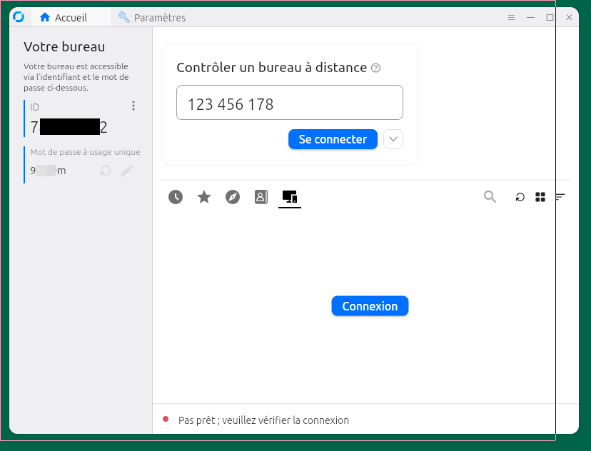
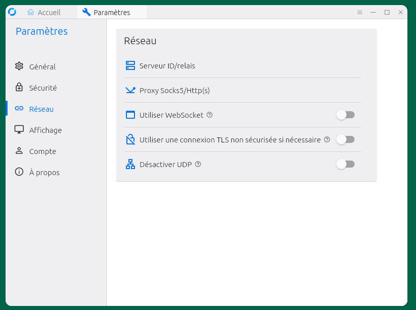
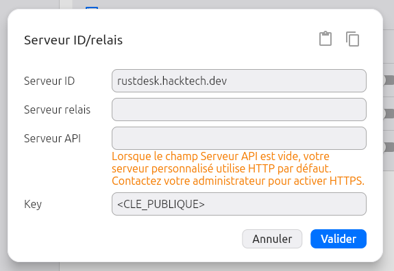
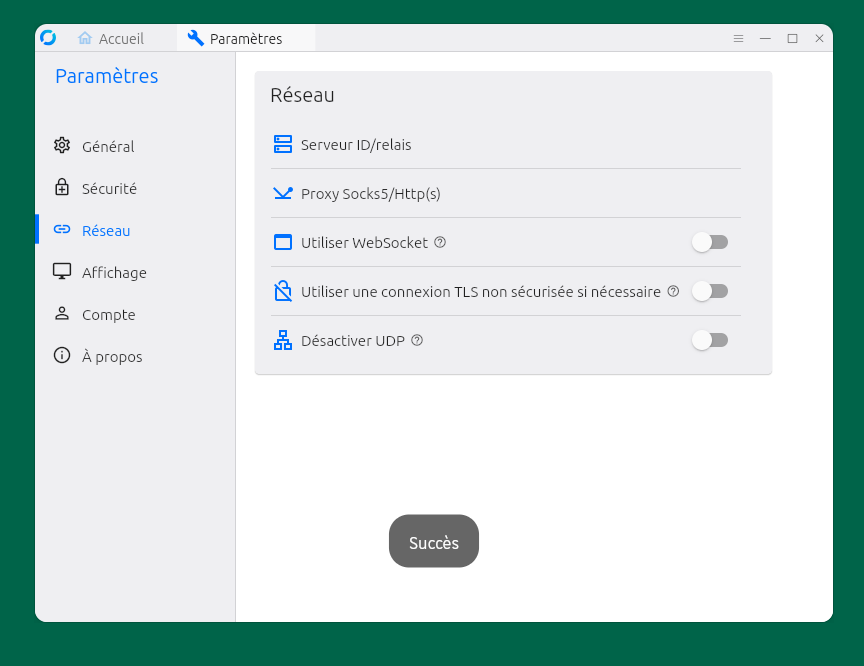
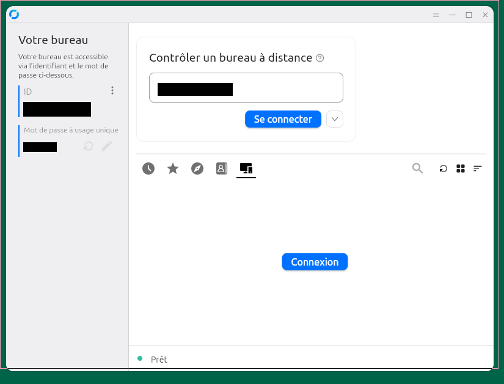
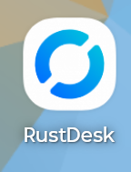
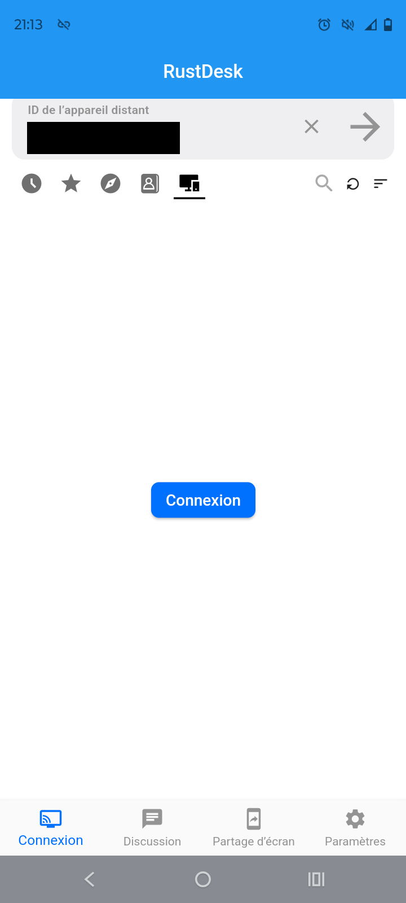
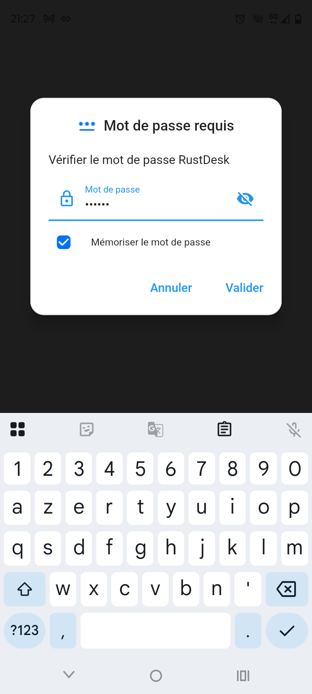
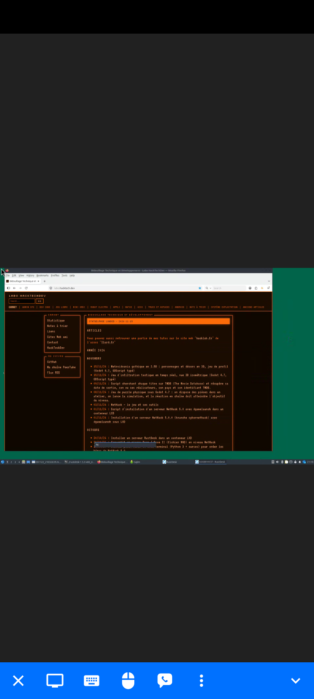

Auto-hébergement · Bureau à distance
Prendre la main à distance… sans passer par les serveurs des autres
Ubuntu 24.04 · LXD · Debian 12 · RustDesk 1.5.3
Démonstration
à travers mon propre serveur
Message affiché par un client RustDesk non configuré :
WebRTC failed: Failed to connect: the target device is offline or does not exist.;
fallback failed: Failed to connect to rs-ny.rustdesk.com:21116
install.sh1. Comprendre
| Programme | Rôle | Ports |
|---|---|---|
| hbbs | Serveur ID (rendez-vous) : enregistre les postes et les met en relation | 21115 (TCP), 21116 (TCP + UDP) |
| hbbr | Relais : fait transiter le trafic si la connexion directe échoue | 21117 |
1. Comprendre
1. Comprendre
Le serveur peut aussi tourner directement sur l'hôte, dans une VM ou sur un petit VPS.
| Système | Formats disponibles |
|---|---|
| Linux | AppImage (ce tutoriel), .deb, .rpm, Flatpak |
| Windows | Installateur .exe ou .msi |
| macOS | .dmg |
| Android | .apk, F-Droid |
| iOS | App Store (contrôler un poste, pas être contrôlé) |
1. Comprendre
Conteneur système : une petite Debian complète (systemd, apt), qui partage le noyau de l'hôte
Incus, le fork communautaire de LXD, s'utilise de la même façon : lxc → incus
2. Le réseau
2. Le réseau
| Change… | Exemple | |
|---|---|---|
| SNAT | l'adresse source | La box quand un PC sort sur Internet |
| DNAT | l'adresse de destination | La « redirection de ports » de la box |
Avant : client 198.51.100.7 → 203.0.113.10:21116
Après : client 198.51.100.7 → 10.10.10.50:21116 (source inchangée ✅)
2. Le réseau
2. Le réseau
sudo ufw allow 21116 # ❌ ne suffit pas
sudo ufw route allow proto tcp to 10.10.10.50 port 21115:21117 # ✅
sudo ufw route allow proto udp to 10.10.10.50 port 21116 # ✅
3. Installer
1 Créer le conteneur Debian
2 Lui donner une IP fixe
3 Repérer l'IP publique de l'hôte
4 Déclarer les proxy devices
5 Le nom de domaine
6 Lancer install.sh
7 Noter la clé publique
8 Vérifier et tester
Prérequis : Ubuntu avec SSH et sudo, IP publique fixe, LXD installé (snap install lxd, lxd init)
lxc launch images:debian/12 rustdesk # IP dynamique (DHCP) : 10.10.10.120
lxc network get lxdbr0 ipv4.address # 10.10.10.1/24
lxc list -c n4 # IP déjà utilisées
lxc config device override rustdesk eth0 ipv4.address=10.10.10.50
lxc restart rustdesk
lxc list rustdesk
# | rustdesk | RUNNING | 10.10.10.50 (eth0) | ...
nat=true : la règle DNAT
doit savoir où envoyer les paquets.
$ ip -4 addr show scope global
2: eno1: <BROADCAST,MULTICAST,UP,LOWER_UP> mtu 1500 qdisc mq state UP
inet 203.0.113.10/24 metric 100 brd 203.0.113.255 scope global dynamic eno1
valid_lft 78107sec preferred_lft 78107sec
18: lxdbr0: <BROADCAST,MULTICAST,UP,LOWER_UP> mtu 1500 qdisc noqueue state UP
inet 10.10.10.1/24 scope global lxdbr0
eno1, pas sur lxdbr0 (bridge LXD) ni lxcbr0dynamic = IP attribuée par DHCP. Si elle change, la redirection cesse : vérifier
que l'hébergeur garantit une IP stable.
| Port | Protocole | Rôle |
|---|---|---|
21115 | TCP | Test NAT (hbbs) |
21116 | TCP + UDP | Serveur ID (hbbs) |
21117 | TCP | Relais (hbbr) |
21114 | — | API, version Pro : ne pas rediriger |
lxc config device add rustdesk rd-tcp proxy \
listen=tcp:203.0.113.10:21115-21117 connect=tcp:10.10.10.50:21115-21117 nat=true
lxc config device add rustdesk rd-udp proxy \
listen=udp:203.0.113.10:21116 connect=udp:10.10.10.50:21116 nat=true
nat=true
sudo ss -tlnp | grep 2111 # rien sur l'hôte
sudo nft list ruleset | grep 2111 # la règle DNAT est là
ip daddr 203.0.113.10 tcp dport 21115-21117 dnat ip to 10.10.10.50
ip saddr 10.10.10.50 ip daddr 10.10.10.50 tcp dport 21115-21117 masquerade
ip daddr 203.0.113.10 udp dport 21116 dnat ip to 10.10.10.50:21116
ip saddr 10.10.10.50 ip daddr 10.10.10.50 udp dport 21116 masquerade
C'est le noyau qui réécrit la destination des paquets.
Si l'IP change ou si le serveur déménage, on modifie la zone DNS, via l'interface de configuration du nom de domaine de votre prestataire : aucun client à reconfigurer.
| Nom | Type | Valeur |
|---|---|---|
rustdesk.hacktech.dev | A | 203.0.113.10 |
$ dig +short rustdesk.hacktech.dev
203.0.113.10
install.sh : répondre 2 (DNS/Domain)listen.
lxc exec rustdesk -- bash # on entre dans le conteneur
apt update && apt install -y wget sudo curl
wget https://raw.githubusercontent.com/techahold/rustdeskinstall/master/install.sh
chmod +x install.sh
./install.sh
| Question du script | Réponse conseillée |
|---|---|
| Choose your preferred connection method | 2 DNS/Domain, puis rustdesk.hacktech.dev |
| Download configs and install HTTP server | 2 Non : pas de service web en plus |
Your IP/DNS Address is rustdesk.hacktech.dev
Your public key is <CLE_PUBLIQUE>
Install Rustdesk on your machines and change your public key and IP/DNS name to the above
Elle reste disponible dans le conteneur :
cat /opt/rustdesk/id_ed25519.pub
id_ed25519, est l'élément irremplaçable du serveur.
Dans le conteneur
# systemctl list-units | grep -i rust
rustdeskrelay.service active running
rustdesksignal.service active running
Depuis un poste extérieur
$ nc -zv rustdesk.hacktech.dev 21116
... succeeded!
$ nc -zv rustdesk.hacktech.dev 21117
... succeeded!
nc ne teste que TCP. L'UDP 21116 se confirme quand le client affiche
« Prêt ».
4. Les clients
wget https://github.com/rustdesk/rustdesk/releases/download/1.5.3/rustdesk-1.5.3-x86_64.AppImage
chmod +x rustdesk-1.5.3-x86_64.AppImage
./rustdesk-1.5.3-x86_64.AppImage
« Pas prêt ; veuillez vérifier la connexion » est normal : le client n'est pas encore configuré.



| Champ | Valeur |
|---|---|
| Serveur ID | rustdesk.hacktech.dev |
| Clé | <CLE_PUBLIQUE> |
| Relais, API | vides |


5. Démo

avec l'application RustDesk pour Android, à travers rustdesk.hacktech.dev
1 Via le magasin d'applications libres F-Droid
2 Ou directement l'APK depuis GitHub :
https://github.com/rustdesk/rustdesk/releases/download/1.5.3/
rustdesk-1.5.3-universal-signed.apk
3 Onglet Paramètres : Serveur ID rustdesk.hacktech.dev + clé
L'icône s'affiche sur l'accueil

1 Saisir l'ID du portable, puis →

2 Taper le mot de passe, Valider

3 Le bureau du portable s'affiche
6. Dépanner
| Symptôme | Cause |
|---|---|
rs-ny.rustdesk.com:21116 | Un des deux postes n'est pas configuré |
Connexion refusée port 21114 | Bouton Connexion (compte) : réservé à la version Pro |
| « Pas prêt » | Serveur injoignable, clé ou adresse du serveur erronée |
reqwest::Error { kind: Request, url: "http://rustdesk.hacktech.dev:21114/api/login-options", ...
ConnectError("tcp connect error", 203.0.113.10:21114, ... "Connexion refusée" }
Cause : le client cherche le serveur API, qui n'existe que dans Server Pro (comptes, carnet d'adresses, OIDC).
rs-ny.rustdesk.com
fallback failed: Failed to connect to rs-ny.rustdesk.com:21116
Cause : au moins un des deux postes utilise encore les serveurs publics.
7. Exploiter
id_ed25519 / id_ed25519.pub
Perdue = nouvelle clé générée = reconfigurer tous les clients
db_v2.sqlite3
Contient les ID des postes enregistrés
Tout se trouve dans /opt/rustdesk/
lxc snapshot rustdesk apres-install # point de reprise
lxc restore rustdesk apres-install # retour arrière
lxc config set rustdesk snapshots.schedule "@daily" # un par jour
lxc config set rustdesk snapshots.expiry 7d # gardés 7 jours
mkdir -p ~/sauvegarde-rustdesk
lxc file pull rustdesk/opt/rustdesk/id_ed25519 rustdesk/opt/rustdesk/id_ed25519.pub \
rustdesk/opt/rustdesk/db_v2.sqlite3 ~/sauvegarde-rustdesk/
chmod 600 ~/sauvegarde-rustdesk/id_ed25519
lxc export rustdesk rustdesk-sauvegarde.tar.gz # conteneur complet
lxc import rustdesk-sauvegarde.tar.gz # restauration, ici ou ailleurs
scp)listen des proxy deviceslxc file push) = clients inchangés7. Exploiter
lxc snapshot rustdesk avant-maj # sur l'hôte
lxc exec rustdesk -- bash # dans le conteneur
wget https://raw.githubusercontent.com/techahold/rustdeskinstall/master/update.sh
chmod +x update.sh
./update.sh
systemctl list-units | grep -i rust # services relancés ?
lxc delete rustdesk/avant-maj # si tout va bien
lxc restore rustdesk avant-maj
7. Exploiter
id_ed25519Sinon, n'importe qui peut utiliser le serveur comme relais et consommer sa bande passante.
Configurer un client avec une clé vide ou fausse.
S'il passe à « Prêt » et se connecte : clé non imposée.
Chercher l'option -k dans les services :
grep ExecStart \
/etc/systemd/system/rustdesksignal.service \
/etc/systemd/system/rustdeskrelay.service
ssh-keygen -t ed25519 # sur le poste
ssh-copy-id utilisateur@monserveur.monhebergement.fr
ssh utilisateur@monserveur.monhebergement.fr # doit marcher SANS mot de passe
# /etc/ssh/sshd_config
PasswordAuthentication no
PermitRootLogin no
sudo systemctl restart ssh
| Priorité | Piste |
|---|---|
| Haute | Postes : mot de passe à usage unique, 2FA, confirmation par clic |
| Moyenne | ufw en refus par défaut (SSH + trafic RustDesk redirigé) |
| Moyenne | unattended-upgrades sur l'hôte et le conteneur |
| Moyenne | Conteneur non privilégié : lxc config get rustdesk security.privileged |
| Basse | Lire install.sh / update.sh avant de les lancer (scripts tiers, en root) |
| Basse | Surveiller les journaux : journalctl -u rustdesksignal -u rustdeskrelay |
Détail dans SECURITY.md du dépôt du tutoriel
7. Exploiter
Tout RustDesk est dans le conteneur : le supprimer suffit.
lxc delete --force rustdesk # conteneur, snapshots, proxy devices, règles DNAT
sudo ufw route delete allow proto tcp to 10.10.10.50 port 21115:21117
sudo ufw route delete allow proto udp to 10.10.10.50 port 21116
rustdesk.hacktech.dev dans la zone DNS1
nat=true : la redirection qui conserve l'IP des clients
2
Obligatoire, notée, sauvegardée
3
Le filet de sécurité de LXD
Tutoriel complet : github.com/HackTechDev/didacticiel_rustdesk
Sources :
RustDesk – Installation OSS
techahold/rustdeskinstall
Réserve
nat=truenat=true | Sans nat | |
|---|---|---|
| Mécanisme | Règle DNAT dans le noyau | Processus forkproxy de LXD |
| IP vue par hbbs | IP du client ✅ | IP de l'hôte ❌ |
| Connexion directe | Possible | Impossible : tout passe par le relais |
| IP fixe du conteneur | Obligatoire | Non requise |
Sessions chiffrées. La clé publique permet au client de vérifier qu'il parle bien à ce serveur.
Très faible en connexion directe. Consommée seulement quand le relais est utilisé.
Non traité : il faudrait des proxy devices pour l'IPv6 de l'hôte.
Non. Couper le contrôle depuis la fenêtre de connexion, ou Paramètres › Sécurité › Permissions.